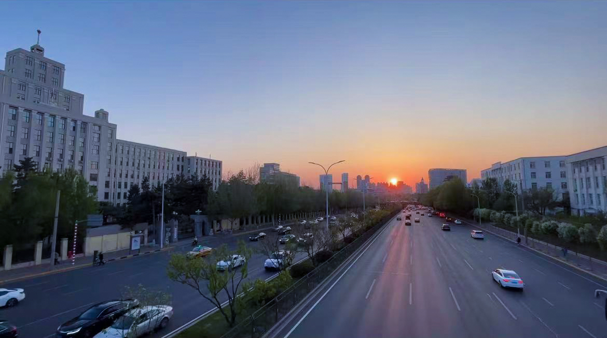
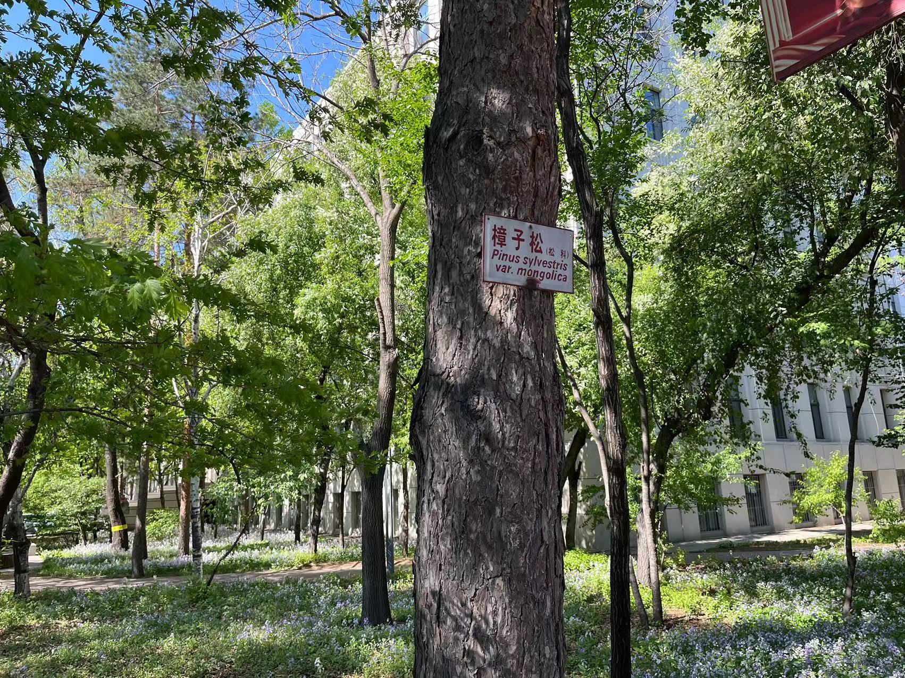
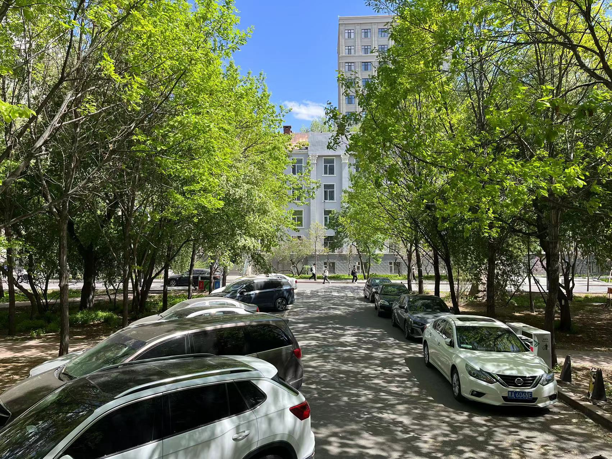
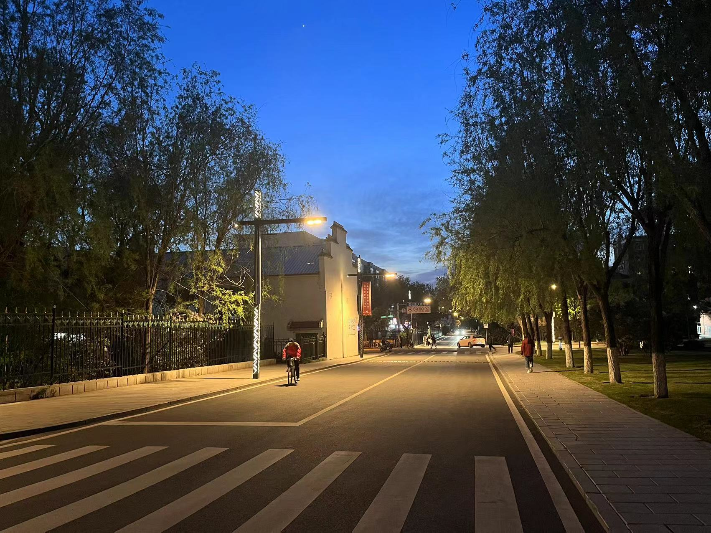

虽然手头有一堆事压着没有什么进度，还是选择记录一手今天所解决的一个难题。误差传播问题。
其实就是对变量的算术运算。对多个变量进行加减乘除、指数化对数化，得到计算后的值\(x\)及对应的标准差\(s_x\)。重要的是，计算\(s_x\)时，要考虑各变量原有的不确定性，将这些不确定纳入公式得到一个准确的不确定性估计，即\(s_x\)。
假如\(x\)是变量\(a, b, c\)的函数：
\[ x = f(a, b, c) \]
那么准确的误差传播公式是：
\[ s_x^2 = \left(\frac{\partial x}{\partial a}\right)^2 s_a^2 + \left(\frac{\partial x}{\partial b}\right)^2 s_b^2 + \left(\frac{\partial x}{\partial c}\right)^2 s_c^2 \]
求出公式中的偏导项，即可得到方差\(s_x^2\)。
公式只是公式。重要的是，没想到埋在心里的问题，在一年半后的这样一个时间点，得到了解决，未曾遗忘。于是，起飞~
列几条关于误差传播的资料。以上。
砂完后我们仨走在去往主楼的路上，正对着晚霞，天还没有黑。路灯正好在两颗樟子松中间，光照亮着，显得格外好看。我当时怎么没有停下来拍张照呢。
 
哲旗已经在想着他毕业时候的日子了。姜Sir说他实验还没开始做，然后就想着毕业了哈哈哈哈。稠李的叶、丁香的花、还有主东门口两侧的蒙古栎，都在放肆地盛大，每天过得忙忙碌碌，来不及去感受。
时间过得真快，他们都来这一年了。
 